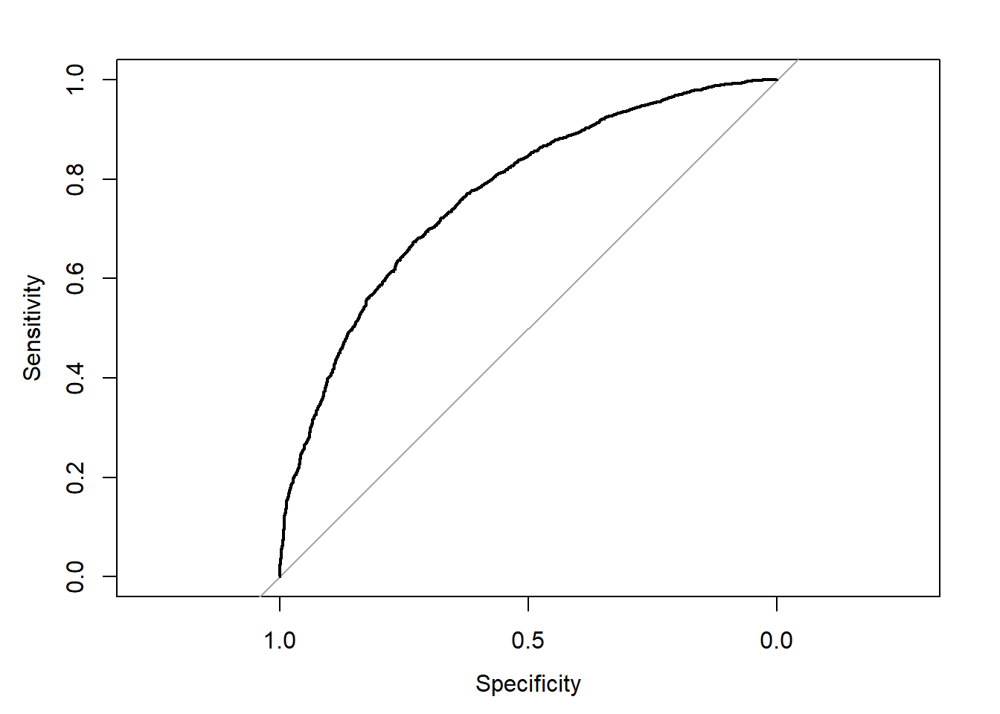

Show the code
ObsData <- readRDS(file = "Data/machinelearning/rhcAnalytic.RDS")This tutorial is very similar to one of the previous tutorials, but uses a different data (we used RHC data here). We are revisiting concepts related to prediction before introducing ideas related to machine learning.
In this chapter, we will talk about Regression that deals with prediction of binary outcomes. We will use logistic regression to build the first prediction model.
ObsData <- readRDS(file = "Data/machinelearning/rhcAnalytic.RDS")In this section, we show the regression fitting when outcome is binary (death).
baselinevars <- names(dplyr::select(ObsData,
!c(Length.of.Stay,Death)))
baselinevars
#> [1] "Disease.category" "Cancer" "Cardiovascular"
#> [4] "Congestive.HF" "Dementia" "Psychiatric"
#> [7] "Pulmonary" "Renal" "Hepatic"
#> [10] "GI.Bleed" "Tumor" "Immunosupperssion"
#> [13] "Transfer.hx" "MI" "age"
#> [16] "sex" "edu" "DASIndex"
#> [19] "APACHE.score" "Glasgow.Coma.Score" "blood.pressure"
#> [22] "WBC" "Heart.rate" "Respiratory.rate"
#> [25] "Temperature" "PaO2vs.FIO2" "Albumin"
#> [28] "Hematocrit" "Bilirubin" "Creatinine"
#> [31] "Sodium" "Potassium" "PaCo2"
#> [34] "PH" "Weight" "DNR.status"
#> [37] "Medical.insurance" "Respiratory.Diag" "Cardiovascular.Diag"
#> [40] "Neurological.Diag" "Gastrointestinal.Diag" "Renal.Diag"
#> [43] "Metabolic.Diag" "Hematologic.Diag" "Sepsis.Diag"
#> [46] "Trauma.Diag" "Orthopedic.Diag" "race"
#> [49] "income" "RHC.use"# adjust covariates
out.formula2 <- as.formula(paste("Death~ ", paste(baselinevars, collapse = "+")))
saveRDS(out.formula2, file = "Data/machinelearning/form2.RDS")
fit2 <- glm(out.formula2, data = ObsData,
family = binomial(link = "logit"))
require(Publish)
adj.fit2 <- publish(fit2, digits=1)$regressionTableout.formula2
#> Death ~ Disease.category + Cancer + Cardiovascular + Congestive.HF +
#> Dementia + Psychiatric + Pulmonary + Renal + Hepatic + GI.Bleed +
#> Tumor + Immunosupperssion + Transfer.hx + MI + age + sex +
#> edu + DASIndex + APACHE.score + Glasgow.Coma.Score + blood.pressure +
#> WBC + Heart.rate + Respiratory.rate + Temperature + PaO2vs.FIO2 +
#> Albumin + Hematocrit + Bilirubin + Creatinine + Sodium +
#> Potassium + PaCo2 + PH + Weight + DNR.status + Medical.insurance +
#> Respiratory.Diag + Cardiovascular.Diag + Neurological.Diag +
#> Gastrointestinal.Diag + Renal.Diag + Metabolic.Diag + Hematologic.Diag +
#> Sepsis.Diag + Trauma.Diag + Orthopedic.Diag + race + income +
#> RHC.use
adj.fit2require(pROC)
#> Loading required package: pROC
#> Type 'citation("pROC")' for a citation.
#>
#> Attaching package: 'pROC'
#> The following objects are masked from 'package:stats':
#>
#> cov, smooth, var
obs.y2<-ObsData$Death
pred.y2 <- predict(fit2, type = "response")
rocobj <- roc(obs.y2, pred.y2)
#> Setting levels: control = No, case = Yes
#> Setting direction: controls < cases
rocobj
#>
#> Call:
#> roc.default(response = obs.y2, predictor = pred.y2)
#>
#> Data: pred.y2 in 2013 controls (obs.y2 No) < 3722 cases (obs.y2 Yes).
#> Area under the curve: 0.7682
plot(rocobj)
auc(rocobj)
#> Area under the curve: 0.7682require(DescTools)
#> Loading required package: DescTools
BrierScore(fit2)
#> [1] 0.1812502# Using Caret package
set.seed(504)
# make a 5-fold CV
require(caret)
#> Loading required package: caret
#> Loading required package: ggplot2
#> Loading required package: lattice
#>
#> Attaching package: 'caret'
#> The following objects are masked from 'package:DescTools':
#>
#> MAE, RMSE
ctrl<-trainControl(method = "cv", number = 5,
classProbs = TRUE,
summaryFunction = twoClassSummary)
# fit the model with formula = out.formula2
# use training method glm (have to specify family)
fit.cv.bin<-train(out.formula2, trControl = ctrl,
data = ObsData, method = "glm",
family = binomial(),
metric="ROC")
fit.cv.bin
#> Generalized Linear Model
#>
#> 5735 samples
#> 50 predictor
#> 2 classes: 'No', 'Yes'
#>
#> No pre-processing
#> Resampling: Cross-Validated (5 fold)
#> Summary of sample sizes: 4587, 4589, 4587, 4589, 4588
#> Resampling results:
#>
#> ROC Sens Spec
#> 0.7545115 0.4659618 0.8535653ctrl<-trainControl(method = "cv", number = 5,
classProbs = TRUE,
summaryFunction = twoClassSummary)
fit.cv.bin<-train(out.formula2, trControl = ctrl,
data = ObsData, method = "glm",
family = binomial(),
metric="ROC",
preProc = c("center", "scale"))
fit.cv.bin
#> Generalized Linear Model
#>
#> 5735 samples
#> 50 predictor
#> 2 classes: 'No', 'Yes'
#>
#> Pre-processing: centered (63), scaled (63)
#> Resampling: Cross-Validated (5 fold)
#> Summary of sample sizes: 4588, 4589, 4587, 4588, 4588
#> Resampling results:
#>
#> ROC Sens Spec
#> 0.7548047 0.4629717 0.8530367We can also use stepwise regression that uses AIC as a criterion.
set.seed(504)
ctrl<-trainControl(method = "cv", number = 5,
classProbs = TRUE,
summaryFunction = twoClassSummary)
fit.cv.bin.aic<-train(out.formula2, trControl = ctrl,
data = ObsData, method = "glmStepAIC",
direction ="backward",
family = binomial(),
metric="ROC")fit.cv.bin.aic
#> Generalized Linear Model with Stepwise Feature Selection
#>
#> 5735 samples
#> 50 predictor
#> 2 classes: 'No', 'Yes'
#>
#> No pre-processing
#> Resampling: Cross-Validated (5 fold)
#> Summary of sample sizes: 4587, 4589, 4587, 4589, 4588
#> Resampling results:
#>
#> ROC Sens Spec
#> 0.7540424 0.464468 0.8562535
summary(fit.cv.bin.aic)
#>
#> Call:
#> NULL
#>
#> Deviance Residuals:
#> Min 1Q Median 3Q Max
#> -2.8626 -0.9960 0.5052 0.8638 1.9578
#>
#> Coefficients:
#> Estimate Std. Error z value Pr(>|z|)
#> (Intercept) 1.0783624 0.7822168 1.379 0.168019
#> Disease.categoryOther 0.4495099 0.0919860 4.887 1.03e-06
#> `CancerLocalized (Yes)` 1.8942512 0.5501880 3.443 0.000575
#> CancerMetastatic 3.2703316 0.5858715 5.582 2.38e-08
#> Cardiovascular1 0.2386749 0.0939617 2.540 0.011081
#> Congestive.HF1 0.4539010 0.0971624 4.672 2.99e-06
#> Dementia1 0.2380213 0.1162903 2.047 0.040679
#> Hepatic1 0.3593093 0.1541762 2.331 0.019779
#> Tumor1 -1.2455123 0.5542624 -2.247 0.024630
#> Immunosupperssion1 0.2174294 0.0730803 2.975 0.002928
#> Transfer.hx1 -0.1849029 0.0945679 -1.955 0.050555
#> `age[50,60)` 0.3621248 0.0984288 3.679 0.000234
#> `age[60,70)` 0.6941924 0.0968434 7.168 7.60e-13
#> `age[70,80)` 0.6804939 0.1126637 6.040 1.54e-09
#> `age[80, Inf)` 0.9833851 0.1410563 6.972 3.13e-12
#> sexFemale -0.2805950 0.0653527 -4.294 1.76e-05
#> DASIndex -0.0429272 0.0062191 -6.902 5.11e-12
#> APACHE.score 0.0174907 0.0020017 8.738 < 2e-16
#> Glasgow.Coma.Score 0.0093657 0.0012563 7.455 9.00e-14
#> WBC 0.0044518 0.0030090 1.479 0.139009
#> Temperature -0.0524703 0.0192757 -2.722 0.006487
#> PaO2vs.FIO2 0.0004741 0.0003054 1.552 0.120548
#> Hematocrit -0.0154796 0.0041593 -3.722 0.000198
#> Bilirubin 0.0313087 0.0094004 3.331 0.000867
#> Weight -0.0031548 0.0011213 -2.813 0.004902
#> DNR.statusYes 0.9347360 0.1326924 7.044 1.86e-12
#> Medical.insuranceMedicare 0.4764895 0.1257582 3.789 0.000151
#> `Medical.insuranceMedicare & Medicaid` 0.3364916 0.1584757 2.123 0.033729
#> `Medical.insuranceNo insurance` 0.3711345 0.1568820 2.366 0.017996
#> Medical.insurancePrivate 0.2632637 0.1139805 2.310 0.020903
#> `Medical.insurancePrivate & Medicare` 0.2819715 0.1313101 2.147 0.031764
#> Respiratory.DiagYes 0.1393974 0.0769026 1.813 0.069886
#> Cardiovascular.DiagYes 0.1804967 0.0836679 2.157 0.030982
#> Neurological.DiagYes 0.4320266 0.1189357 3.632 0.000281
#> Gastrointestinal.DiagYes 0.2819563 0.1092206 2.582 0.009836
#> Hematologic.DiagYes 0.9734424 0.1651363 5.895 3.75e-09
#> Sepsis.DiagYes 0.1539651 0.0943235 1.632 0.102614
#> `incomeUnder $11k` 0.2151437 0.0689392 3.121 0.001804
#> RHC.use 0.3552053 0.0713632 4.977 6.44e-07
#>
#> (Intercept)
#> Disease.categoryOther ***
#> `CancerLocalized (Yes)` ***
#> CancerMetastatic ***
#> Cardiovascular1 *
#> Congestive.HF1 ***
#> Dementia1 *
#> Hepatic1 *
#> Tumor1 *
#> Immunosupperssion1 **
#> Transfer.hx1 .
#> `age[50,60)` ***
#> `age[60,70)` ***
#> `age[70,80)` ***
#> `age[80, Inf)` ***
#> sexFemale ***
#> DASIndex ***
#> APACHE.score ***
#> Glasgow.Coma.Score ***
#> WBC
#> Temperature **
#> PaO2vs.FIO2
#> Hematocrit ***
#> Bilirubin ***
#> Weight **
#> DNR.statusYes ***
#> Medical.insuranceMedicare ***
#> `Medical.insuranceMedicare & Medicaid` *
#> `Medical.insuranceNo insurance` *
#> Medical.insurancePrivate *
#> `Medical.insurancePrivate & Medicare` *
#> Respiratory.DiagYes .
#> Cardiovascular.DiagYes *
#> Neurological.DiagYes ***
#> Gastrointestinal.DiagYes **
#> Hematologic.DiagYes ***
#> Sepsis.DiagYes
#> `incomeUnder $11k` **
#> RHC.use ***
#> ---
#> Signif. codes: 0 '***' 0.001 '**' 0.01 '*' 0.05 '.' 0.1 ' ' 1
#>
#> (Dispersion parameter for binomial family taken to be 1)
#>
#> Null deviance: 7433.3 on 5734 degrees of freedom
#> Residual deviance: 6198.0 on 5696 degrees of freedom
#> AIC: 6276
#>
#> Number of Fisher Scoring iterations: 5For those who prefer a video walkthrough, feel free to watch the video below, which offers a description of an earlier version of the above content.